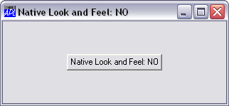
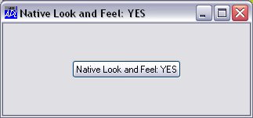
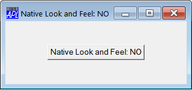
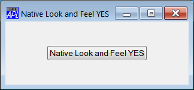

Windows Native Look and Feel is an optional feature of Windows from Windows XP onwards.
If Native Look and Feel is enabled, user-interface controls such as Buttons take on a different appearance and certain controls (such as the ListView) provide enhanced features.
The following pictures illustrate the appearance of a simple Button created with and without Native Look and Feel under Windows XP and Windows 7.




During development, both the Dyalog Session and the Dyalog APL GUI will display native style buttons, combo boxes, and other GUI components if Native Look and Feel is enabled. The option is provided in the General tab of the Configuration dialog.
There are two ways to enable Native Look and Feel in end-user applications.
If you use the File/Export… menu item on the Session MenuBar to create a bound executable, an OLE Server (in-process or out-of-process), an ActiveX Control or a .Net Assembly, check the option box labelled Enable Native Look and Feel in the create bound file dialog box. See User Guide.
If not, set the XPLookandFeel parameter to 1, when you run the program. For example:
dyalogrt.exe XPLookAndFeel=1 myws.dws
Note that to have effect, Native Look and Feel must also be enabled at the Windows level.